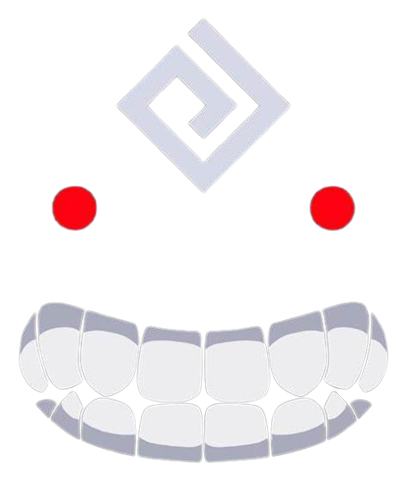

Retour
Protection en Combat,
Black Desert est connu pour son système de combat et si vous êtes nouveau dans le jeu, vous n'êtes peut-être pas encore familier avec certains des effets présents dans Black Desert qui pourraient ne pas exister dans d'autres MMOs.
Cette section est une présentation de base des compétences de protection qui vous permettra de comprendre les avantages de chaque type de protection.
Super Armure (SA),
Les compétences qui incluent la Super Armure vous protégeront contre tous les effets de Contrôle de Foule, à l'exception des prises (attrapées). Vous pouvez savoir quand votre personnage est sous Super Armure si vous activez les Icônes Défensives, ce qui est recommandé pour les nouveaux joueurs. L'icône pour la Super Armure est visible ci-dessous :
La Super Armure fournira également une réduction de dégâts en fonction de la classe que vous jouez, car des modifications ont été apportées au système de Réduction de Dégâts
Invincibilité (Iframes),
La plupart des classes ont également accès à des compétences avec des cadres d'invincibilité, souvent appelés Iframes. Ces compétences sont généralement associées à des mouvements de type dash. Ces compétences évitent toutes les formes de dégâts et les effets de Contrôle de Foule, y compris les grappes.
Éviter les dégâts : Pendant l'activation des Iframes, votre personnage ne peut pas recevoir de dégâts.
Contrôler le mouvement : Les Iframes permettent d'éviter d'être affecté par les effets de contrôle de foule, comme les étourdissements ou les immobilisations.
Opportunités tactiques : Les Iframes permettent d'utiliser certaines compétences pour traverser des zones dangereuses, esquiver des attaques puissantes, ou interrompre des enchaînements d'attaque ennemie.
Garde Avancée (FG)
Contrairement à la Super Armure, la Garde Avancée ne permet d'annuler les effets de Contrôle de Foule que lorsqu'ils proviennent de l'avant, vous laissant vulnérable aux attaques latérales et arrière. La Garde Avancée a l'avantage supplémentaire de réduire les dégâts reçus des attaques frontales, mais vous pouvez toujours être attrapé (grappé) de n'importe quelle direction.
Si votre classe utilise un bouclier, vous recevrez moins de dégâts lorsque vous utilisez des compétences avec la Garde Avancée en raison des modifications apportées au combat .